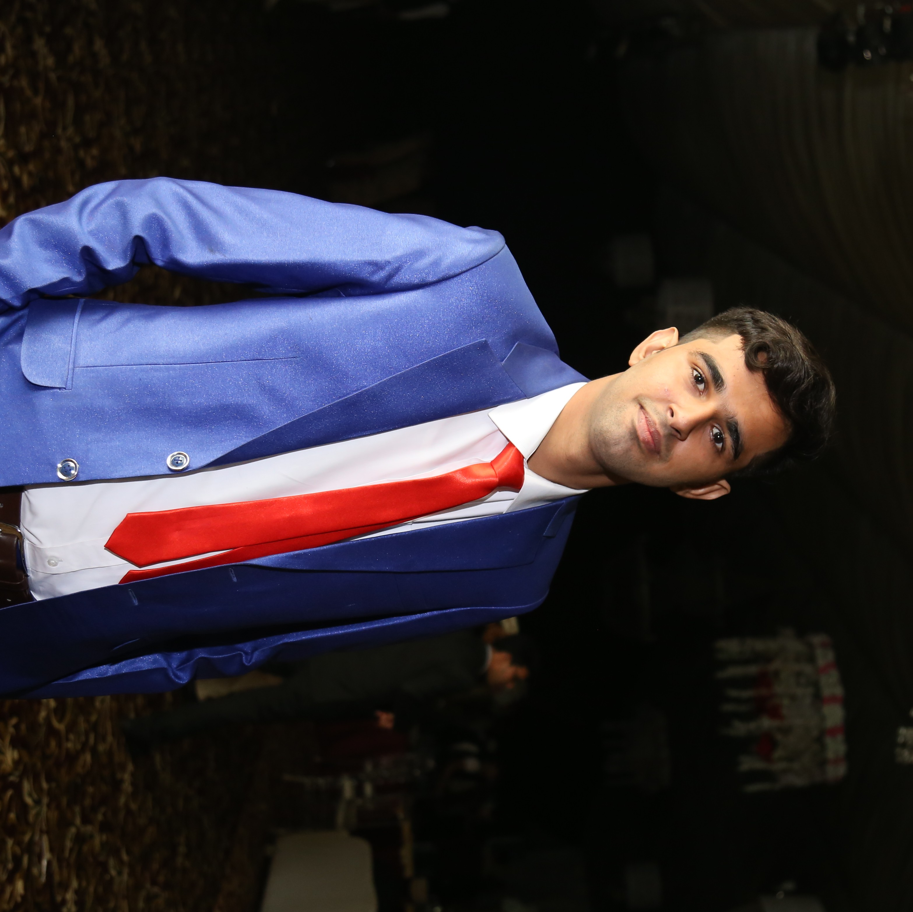

My name is Adil Aziz, and I’m a -year old web developer from Okara, currently studing in Lahore.
Though I am pursuing my degree in BS Software Engineering. I’m self-taught person, but I didn’t do it alone. Everything I know is the collective effort of countless people who have freely dedicated their valuable time to sharing their knowledge with the world. They inspire me, and I want to give back, too.
Everything I learn, I spread.
And there is always something new to learn.